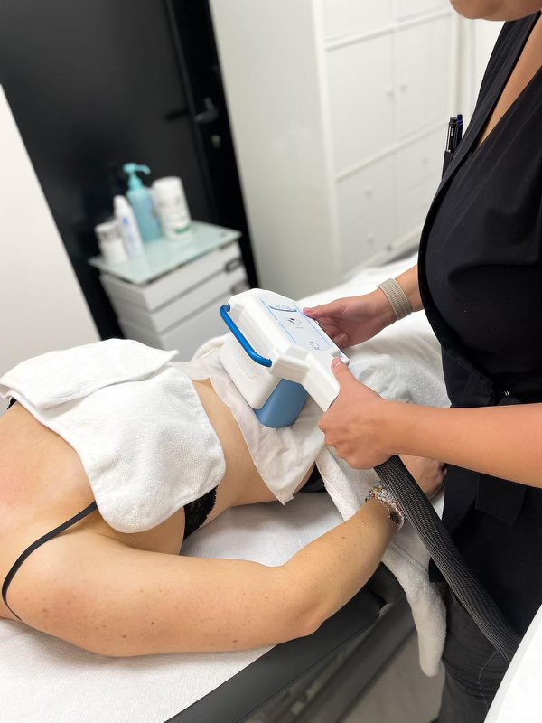

<!-- Departments Section-->
<section class="pb-0">

  <div class="container">
    <div class="row">
      <div class="col-lg-5 d-lg-block"></div>
      <div class="col-lg-7 pb-5 mb-5">
        <h1 class="text-uppercase"><span>Cryolipolyse</span></h1>
        <p>La cryolipolyse est un principe physique connu de longue date : le tissu adipeux est plus sensible que les autres tissus à une exposition au froid. C’est une méthode non invasive, sans douleur, pour sculpter votre silhouette en faisant fondre les amas graisseux localisés. Le bourrelet graisseux est aspiré dans un applicateur qui le refroidit progressivement.
          <br>

          La cryolipolyse est indiquée aux personnes ayant des bourrelets localisés sur l’abdomen, la taille, les poignées d’amour et la culotte de cheval. Cette méthode n’est en aucun cas un subsitut à un régime alimentaire.
          <br>

          C’est un acte médical, réalisé sous contrôle médical. Pour vérifier si vous pouvez bénéficier de ce traitement, il est indispensable que le docteur Addenet vous reçoive en consultation préalable, puis un devis vous serez remis.</p>


        <h2>Déroulement de la séance</h2>
        Le docteur Addenet mesure la zone à traiter pour déterminer l’applicateur adapté, et le protocole de traitement. Ensuite, elle applique une lingette imprégnée de gel cryoprotecteur. On positionne l’applicateur sur le bourrelet graisseux,  puis il est aspiré et le refroidissement commence. Il dure environ 1 heure, vous pourrez ainsi lire, écouter de la musique ou vous reposer.
        Les cellules graisseuses se cristallisent et s’autodétruisent sous l’action du froid. La graisse va s’éliminer naturellement et définitivement.

        Lors de la séance, vous ressentez une sensation de tension et de pincement de la peau, la zone refroidie devient progressivement insensible. Votre peau peut apparaître rouge, gonflée ou hypersensible puis disparaissent en quelques heures.
        Dès la fin de la séance, vous pouvez reprendre vos activités normalement.

        <h2>Résultats</h2>
        Les résultats ne sont pas immédiats. Le système immunitaire doit éliminé progressivement les cellules graisseuses.
        A partir de 3 semaines après le traitement, vous commencerez à voir les premiers changements.
        Au bout de 3 mois, le résultat est stable et optimal. Pour un meilleur bénéfice, on peut recommencer la cryolipolyse au même endroit 8 à 10 semaines après la première séance.

        A vous d’optimiser les résultats obtenus, en prenant soin de votre nouvelle silouhette. Le docteur Addenet vous recommande de bien vous hydrater, d’avoir une bonne hygiène de vie (notamment nutritionnel) et de pratiquer de l’exercice quotidiennement.

        <h2>Prix</h2>
        Le prix dépend du nombre de zones à traiter.
        200 euros la première séance.
      </div>
    </div>

  </div>
</section>

